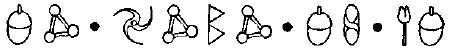
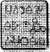

BATI SAHİLİ, HAVEN ŞEHRİ, YERALTI BİRİMİ
BİR leprechaunun geleneksel görünümü yeşil giysili, küçük bir impi andırır. Elbette ki bu, insani görüntüsüdür. Perilerin kendilerine özgü basmakalıp tipleri vardır. Peri Halkı, genellikle Yeraltı Polis Teşkilatının Keşif Biriminde görevlendirilecek saldırgan gnomları ya da koca cüsseli elfleri doğrudan üniversitelerinin beysbol takımından seçerdi.
Yüzbaşı Holly Short bu tanımların hiçbirine uymazdı. İşin aslı Holly’nin, LEPrecon ekibinin bir üyesi olduğunu asla hayal edemezdiniz. Mesleğini tahmin edecek olsanız, bir kediyi andıran duruşu ve güçlü kaslarıyla, bir jimnastikçi ya da profesyonel bir kazıcı olduğunu düşünebilirsiniz. Ama daha yakından bakın, güzel yüzünü es geçip doğrudan gözlerinin içine bakın, kararlı bakışlarının içinde, bir mumu on adım uzaktan yakabilecek ateşi ve aynı zamanda onu Recon’un en saygın memurlardan biri yapan zekâyı fark ederdiniz.
Elbette ki teknik olarak Holly artık Recon’a bağlı değildi. Artemis Fowl olayında, tutsak düşüp fidye karşılığında kurtarılmasının ardından, Recon’un ilk kadın subayı olarak görevi yeniden gözden geçiriliyordu. Şu an evinde oturup aşk merdivenlerini sulamıyor olmasının tek nedeni, Yarbay Root’un Holly’nin görevinin askıya alması durumunda kendi rozetini de geri vereceğini bildirmesiydi. Her ne kadar İç İşleri inanmasa da Root bu kaçırılma olayının Holly’nin suçu olmadığını biliyordu. Ve Holly’nin hızlı düşünmesi sayesinde bu olayda hiç kimse yaşamını yitirmemişti.
Ama Konsey üyeleri insanlarının yaşamlarını yitirmeleriyle pek ilgilenmiyorlardı. Onları asıl ilgilendiren, peri altının yitirilmesiydi. Ve onlara göre Holly, Recon’un fidye için ayrılmış fonunun büyük bir bölümünü kaybetmelerine neden olmuştu. Holly yer üstüne uçup altını geri verene kadar Artemis Fowl’un boğazını sıkmaya hazırdı ama işler böyle yürümüyordu: Kitapta, yani perilerin kutsal kitabında bir periyi altınından ayırmayı başaran bir insanın o altına sahip olacağı yazıyordu.
Bu yüzden İç İşleri Holly’nin rozetine el koymak yerine, onu pis işlerde çalıştırmak konusunda ısrar etmişti -kimseye zarar veremeyeceği bir yerde. Ona haddini bildirmenin en iyi yolu buydu. Holly, Gümrük ve Tüketim Vergisi bölümüne atanmış, bir çavlanın basınç asansörüne bakan, kayalıkların üzerindeki bir mekiğin içinde sıkışıp kalmıştı. Bu anlamsız bir görevdi.
Kaçakçılığın Yeraltı Polis Teşkilatı için çok önemli olduğu söylenirdi. Kaçak mallar zararsız sayılırdı —marka gözlükler, DVD’ler, kapuçino makineleri ve buna benzer şeyler. Zararlı olan bu malların nasıl ele geçirildiğiydi.
B’wa Keli adlı goblin üçlüsü, kaçak eşya pazarını ele geçirmişti ve yeraltı gezintileri giderek daha da arsızlaşıyordu. Hatta, bu kısa gezintilerini ekonomik açıdan daha özgür duruma getirmek için goblinlerin kendi kargo mekiklerini yaptıkları bile söylentiler arasındaydı.
Asıl sorun goblinlerin boş kafalı yaratıklar olmalarıydı. Tek birinin bile kalkanını kaldırmayı unutması,_ fotoğraflarının uydular aracılığıyla dünyanın dört bir yanındaki haber merkezlerine gönderilmesi anlamına gelirdi. Sonra da gezegendeki Çamur Adamlardan arınmış tek bölge olan Yeraltı Birimi, ortaya çıkardı. Ardından da insan doğasına bağlı hava kirliliği, madenlerin kökünü kazıma ve sömürü gelirdi.
Bu da Bölüm’ün kara kaplı defterinde adı geçen zavallıların aylarca gizli denetleme görevinde çalışması demekti, işte bu yüzden Holly şu an az kullanılan bir çavlanın dışındaki bir kayalığın üzerinde demir atmış, oturuyordu.
E37, Paris’teki şehir merkezine çıkan bir basınç asansörüydü. Bu Avrupa başkenti yüksek riskli bir bölge olarak kabul ediliyordu, bu yüzden buraya hemen hemen hiç vize verilmiyordu. Yalnızca LEP görevi için gidilebiliyordu. Uzun yıllardır hiçbir sivil bu çavlana girmemişti ama yine de yirmi dört saat boyunca denetlenmesi gerekiyordu - yani sekiz saatlik mesailerle çalışan, altı memur tarafından.
Holly, Chix Verbil ile aynı mekikte görev almak üzere eşleştirilmişti. Pek çok sprite gibi Chix de kendini Tanrı tarafından kadınlara gönderilmiş, yeşil tenli bir armağan olarak görüyor ve işini yapmaktan çok, Holly’yi etkilemeye çalışıyordu.
“Bu gece çok iyi görünüyorsun, Yüzbaşı,” Chix’in bu geceki açılış cümlesiydi. “Saçma bir şey mi yaptırdın?” Holly ekranın odağını ayarlayıp kumral bir asker tıraşıyla ne yapılabileceğini düşündü.
“İşine yoğunlaş. Her an kendimizi bir ateş hattının ortasında bulabiliriz.”
“Hiç sanmam, Yüzbaşı. Burası bir mezar kadar sessiz. Bu tür görevlere bayılıyorum. Rahat ve kolay. Yalnızca gözlem.” Holly aşağılarındaki görüntüyü izledi. Verbil haklıydı. Çavlanın halka kapatılmasıyla birlikte, bir zamanlar çok iş yapan bu yer, şimdilerde bir hayalet kente dönüşmüştü. Yalnızca arada sırada, yiyecek bir şeyler arayan bir troll, mekiklerinin önünden sendeleyerek geçiyordu. Troller bir bölgenin sınırlarını belirlemeye başladıklarında, burasının ıssız olacağına emin olabilirdiniz.
“Yalnızca sen ve ben varız, Yüzbaşı. Ve gece daha yeni başlıyor.”
“Kapat bu konuyu, Verbil. Dikkatini işine ver. Yoksa erlik, senin için yeterince düşük bir rütbe değil mi?” “Evet, Holly, affedersin, şey, evet, efendim.”
Ah şu spritelar. Hepsi birbirinin aynıydı. Kendilerini dayanılmaz sanmaları için onlara bir çift kanat vermeniz, yeterdi.
Holly dudağını kemirdi. Bu iş için gereğinden fazla vergi mükellefinin altınını boş yere harcamışlardı. Yüzsüz memurlar bu göreve tatil gözüyle baksalar da onlar aynı düşüncede değillerdi. Denetleme görevi memurları halkın gözünde küçük düşürmek için birebirdi.
Buna karşılık, Holly işini elinden geldiğince iyi yapmaya kararlıydı. Dayanabilirse eğer, İç İşleri mahkemesinin ona söyleyecek tek bir sözü kalmayacaktı.
Holly gündelik mekik listesini plazma ekranda görüntüledi. Havalı kıskaçların ölçümleri tamamdı. Mekiklerin depolarında onları dört uzun ve sıkıcı hafta boyunca havada tutabilecek kadar çok benzin vardı.
Listede yazan bir sonraki madde ısıl görüntülemeydi. “Chix, bir uçuş yapmanı istiyorum. Isılları çalıştıracağız.
Verbil sırıttı. Spritelar uçmaya bayılırlardı. “Anlaşıldı, Yüzbaşı,” dedi ve göğsüne bir ısı-ölçer çubuk bağladı.
Holly mekiğin içinde bir delik açtı ve Verbil dışarı fırlayarak, hızla gölgelere doğru tırmandı. Göğsündeki çubuk, altındaki alanı ısıya duyarlı ışınlarla dolduruyordu. Holly bilgisayarındaki ısıl-tarayıcı programı çalıştırdı. Ekranda çeşitli gri tonlarında, buğulu görüntüler belirdi. Bu yöntemle sağlam bir kaya tabakasının ardındaki canlılar bile ortaya çıkardı. Ama ortada hiçbir şey yoktu, yalnızca birkaç karakurbağasıyla, ayaklarını sürüyerek ekrandan kaybolan bir trollün kuyruğu.
Verbil’in sesi hoparlörden çatırdadı. “Hey, Yüzbaşı. Biraz daha yakından bakmak için alçalayım mı?”
Taşınabilir tarayıcıların sorunu buydu işte. Uzaklaştıkça ışınlar zayıflıyordu.
“Pekala, Chix. Bir alan taraması daha yap. Ama dikkatli ol.”
“Merak etme, Holly. Adamın Chix, yalnızca senin için tek parça halinde geri dönecek.”
Holly ona gözdağı vermek için derin bir soluk aldı ama yanıtı boğazında düğümlendi. Ekranda bir şey vardı. Hareket eden bir şey.
“Chix. Uyarıyı alabiliyor musun?”
“Olumlu, Yüzbaşı. Alabiliyorum ama ne aldığımı bilmiyorum.”
Holly ekranın bir kesitini büyüttü. İkinci düzlükte, iki yaratık hareket ediyordu. Yaratıklar griydi.
“Chix. Konumunu bozma. Taramaya devam et.”
Gri mi? Gri şeyler nasıl hareket edebilirdi ki? Gri ölü demekti. Isısı yok demekti, bir mezar kadar soğuk demekti. Yine de....
“Tetikte ol, memur Verbil. Düşmanlarımız olabilir.” Holly, Polis Plaza’yla iletişime geçti. Hiç kuşkusuz, LEP’in teknik dahisi Foaly bu görüntüleri Harekât odasından izliyordu. “Foaly, izliyor musun?”
“Evet, Holly,” diye yanıt verdi sentor. “Seni ana ekrana yansıtmaya çalışıyorum.”
“Bu şekiller hakkında ne düşünüyorsun? Hareket eden gri şekiller hakkında yani? Daha önce hiç böyle bir şey görmemiştim.”
“Ben de öyle.” Ardından, bir klavyenin tıklamasıyla noktalanan, kısa bir sessizlik oldu. “İki açıklaması olabilir. Bir, makinelerde bir sorun var. Bunlar, farklı bir sistemden gelen aldatıcı görüntüler olabilir. Tıpkı radyodaki parazit gibi.”
“Öbür açıklama ne?”
“O kadar saçma ki bu konudan söz etmek bile güç geliyor.”
“Pekala, Foaly, bana bir iyilik yap ve söz et.”
“Şey, ne kadar gülünç gelse de, biri sistemimi alt etmenin bir yolunu bulmuş olabilir.”
Holly’nin beti benzi attı. Foaly böyle bir olasılığı kabul edebiliyorsa eğer, bu kesinlikle doğru demekti. Holly, Foaly ile konuşmasını yarıda kesip dikkatini yeniden memur Verbil’e çevirdi. “Chix! Hemen çık oradan. Yüksel! Yüksel!”
Sprite güzel yüzbaşıyı etkilemeye çalışmakla o kadar meşguldü ki olayın ciddiyetini kavrayamadı. “Rahatla, Holly. Ben bir spriteım. Hiç kimse bir spriteı vuramaz.” Verbil bunu çavlanın içindeki pencerelerden birinden atılan bir mermi kanadında yumruk büyüklüğünde bir delik açtığı sırada söylenmişti.
Holly, Neutrino 2000’ini, tabanca kılıfının içine tıkıp başlığının mikrofonundan emirler yağdırmaya başladı. “Kod On Dört, tekrar ediyorum Kod On Dört. Bir peri vuruldu. Bir peri vuruldu. Ateş altındayız. E37. Sıhhiye ve destek gönderin.”
Holly tünelin zeminine bir ip sallandırarak, mekiğin kapısına indi. İlk elf kralı Frond’un heykelinin arkasına gizlendi. Chix, yolun karşı tarafında, bir moloz yığınının üzerinde yatıyordu. İyi görünmüyordu. Alçak bir duvarın çentikli kalıntıları miğferinin kenarını parçalamış ve telsiz sistemini kullanılmaz duruma getirmişti.
Holly ona hemen ulaşmalıydı, aksi halde Chix gidiciydi. Spriteların iyileştirme güçleri sınırlıydı. Büyüleriyle bir siğili yok edebilirlerdi ama yaraları kapatmak güçlerini aşıyordu.
“Seni kumandana bağlıyorum,” dedi Foaly’nin kulaklarında çınlayan sesi. “Beklemede kal.”
Yarbay Root’un haykırmaları, hava akımları boyunca yankılandı. Keyfi yerinde görünmüyordu. Bunda şaşılacak bir şey yoktu.
“Yüzbaşı Short. Destek güçleri gelinceye kadar olduğun yerde kalmanı istiyorum senden.”
“Olumsuz, Yarbay. Chix vuruldu. Ona ulaşmam gerek.”
“Holly. Yüzbaşı Kelp yalnızca birkaç dakika uzaklıkta. Olduğun yerde kal. Tekrar ediyorum. Olduğun yerde kal.”
Holly miğfer siperliğinin ardından, öfkeyle dişlerini sıktı. LEP’ten kapı dışarı edilmesi an meselesiyken, şimdi bir de bu başına gelenler neydi. Chix’i kurtarmak için doğrudan bir emre karşı gelmek zorundaydı.
Root, Holly’nin karasızlığım sezdi. “Holly, dinle beni. Sana attıkları şey, Chix’in kanadını delip geçti. LEP yeleğin de sağlam değil. Bu yüzden yerinden kıpırdama ve Yüzbaşı Kelp’i bekle.”
Yüzbaşı Kelp. Diploma töreninde kendine Bela adını seçmekle ünlenmiş, LEP’in en coşkulu memuruydu. Yine de Holly’nin o kapıdan geçerken arkasını kollamasını tercih edeceği hiç bir memur yoktu.
“Özür dilerim, efendim, bekleyemem. Chix kanadından vuruldu. Bunun ne demek olduğunu bilirsiniz.”
Bir spriteı kanadından vurmak, bir kuşu vurmaya benzemezdi. Kanatları spriteların en geniş organlarıydı ve başlıca yedi atardamar barındırırlardı. Böylesi bir delik en azından üçünü parçalamış olmalıydı.
Yarbay Root iç çekti. Ses mikrofondan yoğun bir parazitmiş gibi duyuldu.
“Pekala, Holly. Ama kendini koru. Bugün adamlarımdan hiçbirini kaybetmek istemiyorum.”
Holly, Neutrino 2000’ini kılıfından çıkartıp ayarını üçe getirdi. Pusu nişancılarını göz ardı edemezdi. Goblinlerin B’wa Keli üçlüsünden olduklarını var sayarak, bu ayarda bir atışın onları en azından sekiz saat süreyle bayıltacağını düşündü.
Bacaklarını altına kıvırdı ve bir anda heykelin arkasından fırladı. Aynı anda dolu gibi yağmaya başlayan mermiler bir heykeli parçalamaya başladılar.
Holly yerde yatan arkadaşının yanma koştu, başının çevresinde uçuşan mermiler süpersonik arıları andırıyorlardı. Genellikle bu gibi bir durumda en son yapmanız gereken şey, kurbanı kımıldatmaktır ama üzerlerine yağan kurşun yağmuru ona bir seçim hakkı bırakmıyordu. Holly memuru apoletlerinden kavrayarak, onu çürümüş bir dağıtım mekiğinin arkasına taşıdı.
Chix orada uzun süre kalmıştı. Zayıfça gülümsüyordu. “Beni kurtarmaya geldin, Yüzbaşı. Geleceğini biliyordum.”
Holly sesindeki endişeyi bastırmaya çalıştı. “Tabii ki geldim, Chix. Ben asla kimseyi yüz üstü bırakmam.”
“Bana karşı koyamayacağını biliyordum,” diye soludu Chix. “Bunu biliyordum.” Sonra gözlerini kapadı. Yarası büyüktü. Belki de çok büyüktü.
Holly yaraya yoğunlaştı, iyileştir, diye düşündü ve içindeki büyü bedenine milyonlarca iğne batıyormuşçasına fışkırdı. Büyü kollarına yayıldı ve parmaklarına doğru aktı. Ellerini Verbil’in yaralarının üzerine koydu. Parmaklarından deliğe doğru mavi kıvılcımlar saçıldı. Kıvılcımlar yaranın çevresini sararak, yanmış dokuyu onarıp dökülen kanı kopyaladı. Spriteın soluk alması rahatladı ve yanaklarına sağlıklı yeşil bir renk gelmeye başladı.
Holly iç geçirdi. Chix iyileşecekti. Artık bu kanatla göreve çıkamayacaktı ama yaşayacaktı. Holly yaralı kanadına baskı yapmamaya özen göstererek, baygın spriteı yan yatırdı. Şimdi sıra, gizemli gri şekillerdeydi. Holly silahının ayarını dörde yükseltip bir an bile düşünmeden çavlanın girişine doğru koştu.
LEP Akademisindeki ilk gününüzde göğsü bir boğa trollü kadar geniş, büyük, kıllı bir gnome her yeni gelen öğrenciyi duvara mıhlayıp bir yaylım ateşi sırasında güvenli olmayan bir binaya asla girmemesi konusunda onu uyarırdı. Bunu en ısrarcı biçimde söylerdi. Ve bu özlü sözleri her yeni öğrencinin beynine kazılıncaya kadar her gün yinelerdi. Oysa, Yüzbaşı Holly Short’un şu an yapmak üzere olduğu, aynen buydu.
Holly terminalin çifte kapılarını hızla açarak, bir kayıt masasının altına gizlendi. Dört yüz yıldan öncesine kadar, bu bina yer üstü vizelerini almak için kuyruğa giren turistlerle bir arı kovanı gibi kaynıyordu. Bir zamanlar, Paris turistlerin çok beğendikleri bir yerdi. Ama kaçınılmaz bir şekilde insanlar bu Avrupa başkentine sahip çıkmaya karar vermiş gibi görünüyorlardı. Şu an, perilerin kendilerini güvende hissettikleri tek yer, insanların yeşil renkte olsalar bile küçük yaratıklara dönüp bakmadıkları, Paris’teki Eurodisney’di.
Holly miğferindeki hareket-algılayıcı filtreyi çalıştırdı ve masanın emniyet panelinin ardından binayı taradı. Bir şey hareket edecek olursa, miğferdeki bilgisayar onu otomatik olarak turuncu bir taçla işaretleyecekti. Holly başını kaldırdığı sırada, manzaralı terastan mekik hangarına doğru uzun adımlarla ilerleyen iki kişi gördü. Bunlar kesinlikle goblindi, arkalarından uçan bir yük arabası sürükleyerek, dört nala koşuyorlardı adeta. Üzerlerinde kuşkusuz ısıl algılayıcılarını yanıltmak için giydikleri, miğferleriyle takım, yansıtıcılı bir tür alüminyum giysi vardı. Bu çok akıllıcaydı, hem de Goblinlere göre fazlasıyla akıllıcaydı.
Holly bir kat altlarından goblinlerle aynı doğrultuda koşuyordu. İki yanındaki duvarlara asılı, eski ilanlar çerçevelerinin içinden sarkıyorlardı.
İKİ HAFTALIK GÜNDÖNÜMÜ TURU. YİRMİ GRAM ALTINA. ON YAŞIN ALTINDAKİ ÇOCUKLARA BEDAVA.
Holly turnikeli girişin üzerinden atlayıp güvenlik bölgesini ve gümrük vergisi uygulamayan dükkânları geçti. Goblinler şimdi inişe geçmişlerdi, çizmeleri ve eldivenleri donmuş bir yürüyen merdivene çarpıyordu. İçlerinden biri aceleden başlığını düşürdü. Bir goblin için uzun sayılırdı, bir metrenin üzerindeydi. Gözkapaksız gözleri panikten devrildi ve çatallı dili gözbebeklerini nemlendirmek için yukarı uzandı.
Yüzbaşı Short yol boyunca birkaç el ateş etti. Atışlardan biri en yakınındaki goblinin sırtına isabet etti. Holly inledi. Bu sinir merkezine yakın bir yer değildi. Ama olmak zorunda da değildi. Bu alüminyum giysilerin bir sakıncası vardı. Neutrino akımlarını iletiyorlardı. Akım giysinin kumaşının içinde bir su birikintisinin içindeki dalgacıklar gibi yayıldı. Goblin yaklaşık iki metre yükseğe sıçradı, sonra yuvarlanarak, bilinçsizce yürüyen merdivenin dibine düştü. Uçan yük arabası kontrolden çıkıp topaç gibi dönmeye başladı ve bavulların döndüğü banda çarptı. Parçalanan sandığın içinden yüzerce küçük silindir döküldü.
İki Numaralı Goblin, Holly’ye doğru tam bir düzine el ateş etti. Belki kolları sinirden titrediği için isabet ettiremedi. Ama aynı zamanda, kalçadan ateş etmek yalnızca filmlere özgüydü. Holly bilgisayarın bir eşleme yapabilmesi için miğferindeki kamerayla goblinin silahının fotoğrafını çekmeye çalıştı ama çok fazla titreşim vardı.
Kovalamaca çıkış terminaline kadar kanallar boyunca sürdü. Çalışan liman bilgisayarlarının vızıltısını duymak, Holly’yi şaşırtmıştı. Burada bir güç kaynağı olmaması gerekiyordu. LEP mühendisleri jeneratörleri sökmüş olmalıydı. Burada elektriğe ne gerek vardı ki?
Holly yanıtını bulmuştu bile. Tek raylı mekiği hareket ettirmek ve Kontrol Merkezi için elektrik gerekliydi. Hangara girdiğinde kuşkuları doğrulandı. Goblinler bir mekik inşa etmişlerdi!
Bu inanılmaz bir şeydi. Goblinlerin beyninde ancak on vatlık bir ampulü yakacak kadar elektrik bulunurdu. Nasıl olur da bir mekik inşa etmiş olabilirlerdi. Ama işte oradaydı. Rıhtımın üzerinde kullanılmış tekne satıcılarının en büyük kâbusu gibi duruyordu. Üzerinde, on yıldan daha eski olmayan tek bir parça bile yoktu. Dış kabuğu kaynak ve perçinlerden oluşmuş, yamalı bir yorganı andırıyordu.
Holly şaşkınlığını gizlemeye çalışarak, izleme işine yoğunlaştı. Goblin mekiğin ambarından bir çift kanat almak için durdu. Holly onu tam o anda vurmayı deneyebilirdi ama bu fazlaca tehlikeliydi. Mekiğin nükleer aküsünün basit bir kurşun tabakayla korunduğunu öğrenmek, onu pek de şaşırtmazdı.
Goblin bu gecikmeden yararlanarak, giriş tüneline doğru kaçtı. Tek raylı araç kızgın bir kaya boyunca hareket edip koca çavlana doğru ilerledi. Bu çavlan Dünya’nın çekirdek kabuğunu kalbura çeviren doğal hava deliklerinden biriydi. Gezegenin erimiş kabuğundan sızan magma akımları düzensiz aralıklarla bu çavlanların içinden yeryüzüne fışkırırdı. Bu basınç rahatlamaları olmasa Dünya ölçülemeyecek kadar uzun yıllar Önce parçalara ayrılmış olurdu. LEP bu doğal güçten ekspres yerüstü yolculuklarında yararlanıyordu. Recon memurları acil durumlarda titanyumdan yapılmış yumurtalarını magma alevlerinin üzerinde sürüyorlardı. Daha zevkli yolculuklar içinse mekikler alevlerden kaçınıp dünyanın çeşitli noktalarındaki terminallere açılan sıcak-hava çavlanlarından yukarı çıkmayı yeğliyorlardı.
Holly adımlarını yavaşlattı. Goblinin kaçacak yeri yoktu. Çavlanın içine doğrudan uçmaya kalkışmazsa tabii ki ama hiç kimse bu denli çılgın olamazdı. Bir magma alevine yakalanan her şey alt-atomik bir düzeyde kızarırdı.
Çavlanın çıkışı ileride bir hayal gibi belirdi. Burası kocaman ve kömürleşmiş kayalıklarla çevrili bir delikti.
Holly miğferin sesini açtı. “Bu kadarı yeter,” diye bağırdı, uluyan rüzgârın içinden. “Vazgeç. Bilim olmadan o çavlana giremezsin.”
Bilim, LEP dilinde teknik bilgi anlamına geliyordu. Bu durumda bilim, alev-fışkırma zamanını önceden kestirme anlamına geliyordu. Doğruluk oranı saniyenin onda biri kadardı. Genellikle.
Goblin garip tüfeğini yukarı kaldırıp bu kez dikkatlice nişan aldı. Ateşleme mandalı düştü ama bu silah her ne atıyorsa içinde ondan kalmamıştı.
“Nükleer olmayan silahların sorunu da bu işte, cephanesiz kalabiliyorsun,” dedi Holly, şakayla karışık. Her ne kadar dizleri korkudan titrese de bir asırlık, geleneksel silah savaşı esprisini yapmak istemişti.
Cevap olarak, goblin tüfeğini Holly’ye doğrulttu. Bu berbat bir atıştı, beş metre uzağına düşmüştü. Ama amacı olan dikkat dağıtmayı başarmıştı. Üçlünün üyesi bu anı kanatlarını ateşlemek için kullandı. Bunlar eski model kanatlardı —döner motorları ve kırık bir susturucuları vardı. Motorun gürültüsü tüneli doldurdu.
Kanatların arkasından bir gürültü daha geliyordu. Bu Holly’nin çavlanlarda yaptığı uzun uçuşlar sayesinde, yakından tanıdığı bir gürültüydü. Bir alev dalgası geliyordu.
Holly hızlı düşündü. Eğer Goblinler terminali bir şekilde güç kaynağına bağlamayı becerdilerse, tüm güvenlik sistemleri harekete geçerdi. Buna dahil olanlar içinde...
Yüzbaşı Short hızla döndü ama patlamaya dayanıklı kapılar kapanmak üzereydi. Ateşe dayanıklı duvarlar çavlanın içindeki bir ısı algılayıcısı tarafından otomatik olarak harekete geçiriliyordu. Aşağıdan bir alev geçtiğinde, iki metre kalınlığındaki çelik kapılar tünelin girişini terminalin geri kalanından ayırmak üzere kapanıyorlardı. Yaklaşan bir magma dalgası onları orada kapana kıstırmıştı. Aslında magmanın onları öldüreceği falan yoktu — alevlerden kaçmanın fazla bir anlamı yoktu. Ama süper ısınmış hava onları birer sonbahar yaprağından beter kavururdu.
Goblin yakındaki püskürmeden habersiz, tünelin ucunda duruyordu. Holly onun aslında, çavlanın içine uçacak kadar çılgın bir kaçak olmadığını fark etti. O yalnızca sıradan bir aptaldı.
Gösterişli bir atlayış yaparak kendini çavlana bırakan goblin hızla gözden kayboldu. Aslında yeterince hızlı değil. Yedi metre uzunluğundaki bir lav fıskiyesi pusuda bekleyen bir yılan gibi birden üstüne atlayıp onu yakıp kül etti.
Holly boş yere üzülerek zaman harcamadı. Yeteri kadar kendi sorunu vardı zaten. LEP tulumlarının fazladan ısıyı dağıtan ısıl halkaları vardı ama bu yeterli değildi. Birkaç saniye içinde çevreyi kuru bir sıcak dalgası saracak ve ısı duvarları çatlatacak kadar yükselecekti.
Holly yukarı baktı. Tünelin tavanında eskiden kalma, bir dizi güçlendirilmiş, su soğutucu depo duruyordu. Holly silahını maksimum güce ayarladı ve depoların tam ortalarına ateş etmeye başladı. Şimdi nazik olmanın zamanı değildi.
Depolar çöküp parçalandıkça dışarı küf kokulu havanın yanı sıra, birkaç damla soğuk su fışkırdı. îşe yaramayacaktı. Yüzyıllar önce kurumuş olmalıydılar ve goblinler asla yerlerine yenilerini koyma zahmetine girmemişlerdi. Ama geriye, dokunulmamış bir tane kalmıştı. Bu siyah renkli dikdörtgen, LEP’in standart yeşil modellerinin arasında uyumsuz duruyordu. Holly deponun tam altında durup ateş etti.
Çavlandan kocaman bir sıcak dalgası geldiği anda, tam üç bin litre soğutuculuğu artırılmış su Holly’nin başından aşağı boşaldı. Aynı anda hem yanıyor, hem de donuyor olmak garip bir duyguydu. Holly omzunda oluşan kabarcıklarının suyun basıncıyla patladıklarını düşündü. Yüzbaşı Short dizlerinin üzerine düşmüş, akciğerleri havadan yoksun kalmıştı. Ama soluk alamazdı, bunu şu anda yapamazdı. Ye de miğferinin deposunu açmak için elini bile kaldıramazdı.
Ona sonsuzlukmuş gibi gelen bir süre sonra kükreme durdu ve Holly gözlerini açıp kendini buharla kaplı bir tünelin içinde buldu. Siperliğindeki sileceği çalıştırıp doğruldu. Sular sürtünmeye dayanıklı tulumunun üzerinden akıp gidiyordu. Miğferinin kilitlerini açıp tünelin havasını içine çekti. Hava hâlâ sıcaktı ama en azından solunabilirdi.
Holly’nin arkasındaki dayanıklı kapılar kayarak açıldı ve aralıktan Yüzbaşı Bela Kelp’le LEP’in hızlı-müdehale takımı belirdi.
“İyi bir manevraydı, Yüzbaşı.”
Tüm dikkatini az önce buharlaşan goblinin silahına yoğunlaştırmış olan Holly yanıt vermedi. Bu, tüfeklerin en acımasızıydı, neredeyse yarım metre uzunluğundaydı ve namlusunun üzerine ışıklı bir teleskop iliştirilmişti. Holly’nin ilk düşüncesi, B’wa Kell’in kendi silahlarını ürettikleri olmuştu. Ama şu an gerçeğin aslında çok daha tehlikeli olduğunu fark etti. Yüzbaşı Short tüfeği yarı erimiş kayanın üzerinden aldı. Silahı Kanun Güçlerinin Tarihçesi dersinden anımsadı. Bu eski bir Yumuşakburun lazerdi. Yumuşakburunlar uzun süre önce yasaklanmışlardı. Ama işin en kötüsü bu değildi. Tüfek, peri güç kaynağı yerine insanlara ait bir AAA alkali pille çalışıyordu.
“Bela,” diye seslendi Holly. “Gel de, şuna bir bak.
“D’Arvit,” diye soludu Kelp, miğferindeki telsize uzanarak. “Yarbay Root’la görüşmem için bana öncelikli bir hat verin. A Sınıfı bir kaçakçılık olayı var. Evet A Sınıfı. Teknik elemanlardan oluşan bir ekip istiyorum. Foaly’yi de alırı. Bu çeyrek-dairenin olduğu gibi kapatılmasını istiyorum...”
Bela emirler yağdırmayı sürdürdü ama söyledikleri derinden gelen bir vızıltı gibi Holly’nin kulaklarında yavaş yavaş yok olup gitti. B’wa Keli, Çamur Adamlarla ticaret yapıyordu. İnsanlar ve goblinler yasaklanmış silahları yeniden gündeme getirmek için el ele vermişlerdi. Ve silahlar buradaysa, Çamur Adamların gelmesi de an meselesiydi.
Yardım tam zamanında yetişmişti. Otuz dakika içinde E3 7 çevresinde titreşen o kadar çok sayıda halojen projektör birikmişti ki çavlan Golem World filminin galasını andırıyordu.
Foaly diz çökmüş, yürüyen merdivenin yanında baygın yatan goblini muayene ediyordu. Sentor sayesinde insanlar Peri Halkının yeraltındaki gizli barınaklarını henüz keşfedememişlerdi. Foaly alevleri önceden tahmin etmekten, hafıza silme teknolojisine kadar, her önemli gelişmeye imza atmış olan, gerçek bir teknik dehaydı. Oysa her buluşu onu biraz daha az saygılı ve daha sinir bozucu yapmıştı. Ama Recon’daki bir kadın subaya zaafı olduğu yolunda söylentiler vardı. Aslında, Recon’daki tek kadın subaya.
“İyi iş, Holly,” dedi Foaly, elini goblinin yansıtıcılı giysisine sürterek. “Az önce bir kebapla savaştın.”
“Devam et, Foaly, dikkatleri B’wa Kell’in, algılayıcılarını alt ettiği gerçeğinden başka yöne çevirmeye çalış.”
Foaly miğerlerden birini denedi. “B’wa Keli değil. Asla olamaz. Bu iş için fazla salaklar. Goblinlerin akılları böyle şeylere ermez. Bunlar insan yapımı.”
Holly burnundan soludu. “Peki bunu nereden biliyorsun? Dikiş izlerinden mi anladın?”
“Hayır,” diye cevapladı Foaly, başlığı yavaşça Holly’ye doğru atarak.
Holly etiketini okudu. “Alman Malı.”
“Bunun ateşe dayanıklı bir giysi olduğunu tahmin etmeliydim. Kumaşı giyeni hem iç, hem de dış ısıya karşı koruyor. Bu ciddi bir konu, Holly. Burada birkaç tasarımcının elinden çıkmış gömleklerden ya da bir kutu çikolatadan söz etmiyoruz. Bazı insanlar, B’wa Keli ile ciddi bir kaçakçılık işi yapıyor.”
Teknik ekip mahkûmun yanma gidebilsin diye, Foaly yoldan çekildi. Teknikçiler baygın yatan gobline damardan bir uyuşturucu verip onu fişlediler. Uyuşturucunun içinde yatıştırıcı özelliğe sahip mikro-kapsüller ve küçük bir patlayıcı vardı. LEP fişlediği bir suçlunun yasadışı bir işe bulaştığını fark edecek olursa onu bilgisayar aracılığıyla vurabilirdi.
“Bu işin arkasında kimin olduğunu biliyorsun, değil mi?” dedi Holly.
Foaly gözlerini devirdi. “Bırak, tahmin etmeye çalışayım. Yüzbaşı Short’un azılı düşmanı, Artemis Fowl.” “Tabii, başka kim olabilir ki?”
“Bu yalnızca bir tahmin. Peri Halkı yıllar boyunca binlerce Çamur Adamla temasa geçti.”
“Öyle mi?” diye sertçe karşılık verdi Holly. “Peki bunlardan kaçının hafızası silinmedi?”
Foaly sorunun yanıtını düşünürmüş gibi yapıp dikkatini dağıtabilecek beyin sinyallerinin yönünü değiştirmeye yarayan, alüminyum şapkasını başına sıkıca oturttu. “Üç,” diye mırıldandı, en sonunda.
“Anlamadım?”
“Üç, tamam mı?”
“Haklısın. Fowl ve evcil gorilleri. Bu işin arkasında Artemis var. Dedi dersin.”
“Öyle olmasını çok isterdin, değil mi? En sonunda, öcünü almak için tam aradığın fırsat. Geçen defa LEP, Artemis’e karşı çıkmaya kalkıştığında olanları hatırlıyorsun, değil mi?”
“Hatırlıyorum. Ama bu geçen defaydı.”
Foaly sırıttı. “Artık on üç yaşında olduğunu hatırlatmak isterim.”
Holly’nin eli vızıltı değneğinin üzerine düştü. “Kaç yaşında olduğu umurumda bile değil. Ona bununla bir kez vurursam, bebek gibi uyur.”
Foaly başıyla girişi işaret etti. “Senin yerinde olsam cephanemi boş yere harcamazdım. Ona ihtiyacın olacak.” Holl, Foaly’nin bakışlarını izledi. Yarbay Julius Root güvenli bölgenin öbür yanına geçiyordu. Çevresine baktıkça Pancar lakabına uygun olarak gitgide kızarıyordu.
“Yarbay,” diye söze girdi Holly. “Bunu görmeniz gerek.”
Root’un bakışı Holly’yi susturdu. “Aklından neler geçiyordu?”
“Anlayamadım, efendim?”
“Bana yalan söyleme. Olay boyunca harekât merkezindeydim. Miğferindeki kameranın çektiği görüntülerden her şeyi izledim.”
“Ah.”
“Ah, bu olayı kapatmaya yetmiyor, Yüzbaşı!” Root’un kısacık kesilmiş kır saçları heyecandan titriyordu, “Bunun bir gözlem görevi olması gerekiyordu. Eğitimli popolarının üzerinde oturmuş, onları yardıma çağırmanı bekleyen pek çok destek mangası vardı. Ama hayır, Yüzbaşı Short, B’wa Keli ile tek başına başa çıkmaya karar verdi.”
“Bir adamım vurulmuştu, efendim. Seçme şansım yoktu.”
“Verbil orada ne yapıyordu ki, zaten?”
Holly ilk kez bakışlarını yere çevirdi. “Onu ısıl ölçümü yapması için göndermiştim, efendim. Yalnızca kuralları uygulamaya çalışıyordum.”
Root başını salladı. “Sağlık görevlileriyle konuştum. Verbil iyileşecek ama uçuş günleri sona erdi. Bir mahkeme olacak, tabii.”
“Evet, efendim. Anlaşıldı.”
“Eminim ki yalnızca bir formalitedir ama Konseyi bilirsin.”
Holly Konseyi çok iyi biliyordu. Tarihte art arda iki kez sorgulanacak, ilk LEP memuru olacaktı.
“Pekala, bu A Sınıfı hakkında duyduklarım ne?”
Tüm kaçakçılıklar sınıflandırılırdı. A sınıfı, tehlikeli insan teknolojisinin koduydu. Örneğin, güç kaynakları gibi.
“Bu taraftan, efendim.”
Holly onları, bakım bölgesinin arka tarafına, girişi kısıtlandırılmış, pleksiglas bir kubbenin yükseldiği, mekik hangarına götürdü. Üzerleri donmuş kanatçıklara bastırdı.
' “Görüyor musunuz. Bu ciddi bir konu.”
Root kanıtı inceledi. Mekiğin kargo bölümünde, AAA pillerle dolu sandıklar vardı. Holly içlerinden bir paket aldı.
“Kalem piller,” dedi. “İnsanların sıkça kullandıkları bir güç kaynağı. Üstünkörü, verimsiz ve bir çevre düşmanı. Burada tam on iki sandık dolusu var. Kim bilir tünelde kaç tane vardır?”
Root pek etkilenmemişti. “Korkudan titremediğim için kusura bakma. Birkaç goblin insanlara ait bir atariyle oynamışlar hepsi bu. Ne olmuş yani?”
Foaly goblinin Yumuşakburun lazer silahım fark etmişti. “Yo, olamaz!” dedi silahı inceleyerek.
“Kesinlikle olabilir,” diye ona katıldı Holly.
Yarbay konuşmanın dışında bırakılmış olmaktan hiç hoşlanmamıştı.
“Yo, olamaz mı? Umarım aşırı duygusal davranıyorsunuzdur. ”
“Hayır, şef,” diye yanıt verdi Foaly, bir kez de olsa ciddi bir sesle. “Bu olay ölümüne ciddi. B’wa Keli, eski Yumuşakburun lazerleri çalıştırmak için insanlara ait piller kullanıyor. Pil başına ortalama altı atış yapabilirler. Ama her goblinin ceplerini bu pillerle doldurursanız, bu çok sayıda atış manasına gelir.”
“Yumuşakburun lazerler mi? Bunlar uzun yıllar önce yasaklanmışlardı. Hepsi de işlenip geri dönüştürülmemiş miydi?”
Foaly başını salladı. “Sözüm ona. Bölümüm eritme işlemini denetlemişti. Önem verdiğimizden değil. Başta ömrü beş yıldan az olan, güneş enerjisiyle çalışan tek bir pille besleniyorlardı. Anlaşılan, biri, birkaçını geri dönüşüm deposundan gizlice çıkarmayı başarmış olmalı.”
“Bu pillerden görüldüğü kadarıyla birkaçını değil, birçoğunu çıkarmış olmalı. Bir bu eksikti, Yumuşakburunlu goblinler.”
Yumuşakburun teknolojisinin ardında yatan kuram patlayıcının üzerine bir engelleyici yerleştirmekti, böylelikle lazer daha yavaş hareket eder ve doğrudan hedefin içine işlerdi. İlk başlarda, tünel kazmak için geliştirilmiş olan bu silah kısa süre içinde açgözlü silah üreticilerince uyarlanmıştı.
Yumuşakburunlar kısa süre içinde yasaklanmıştı çünkü bu silahlar öldürmek için tasarlanmışlardı, aciz bırakmak için değil. Zaman zaman, bir çete üyesinin eline bir tanesi geçerdi. Oysa bu, ufak çaplı bir karaborsa ticaretine benzemiyordu. Birisi büyük bir şey planlamış gibi görünüyordu:
“Buradaki en rahatsız edici şey ne, biliyor musunuz?” diye sordu Foaly.
“Hayır,” dedi Root, aldatıcı bir sakinlikle. “Bana en rahatsız edici şeyin ne olduğunu söyle.”
Foaly silahı tersine çevirdi. “Silahın insan piliyle çalışmak üzere uyarlanmış olması. Çok akıllıca. Bir goblinin bunu kendi başına çözmesi olanaksız.”
“Peki ama bir Yumuşakburun neden uyarlansın ki?” diye sordu yarbay. “Neden eski güneş pilleri kullanılmasın?”
“Güneş enerjisiyle çalışan piller çok ender bulunur. Altın değerindedirler. Antikacılar onları her türlü eski oyuncağı çalıştırmak için kullanırlar. Ve benim algılayıcılarıma yakalanmadan bir güç kaynağı fabrikası kurmak olanaksızdır. Onları insanlardan çalmak en kolayı.”
Root o alışıldık mantar purolarından birini yaktı. “Bana hepsinin bu kadar olduğunu söyleyin. Bana başka bir şey olmadığını söyleyin.”
Holly’nin bakışları hangarın sonuna kaydı. Root, Holly’nin bakışlarını izledi ve sandıkları hızla geçerek, rıhtımda duran eğreti mekiği fark etti. Kumandanın bakışları gemiye kenetlendi.
“Peki bu kahrolası şey ne, Foaly?”
Sentor elini geminin dış kabuğunda gezdirdi. “Şaşırtıcı. İnanılmaz. Hurdaları bir araya getirip bir mekik yapmışlar. Bu şeyin yerden havalanmasına şaşarım.” Yarbay mantar purosunu sertçe ısırdı. “Goblinlere hayranlığın bittiğinde, belki bana B’wa Kell’in bu şeyi nasıl ele geçirdiğini açıklayabilirsin, Foaly. Eski teknolojiyle üretilmiş mekiklerin ortadan kaldırılmış olduklarını düşünüyordum.”
“Ben de öyle düşünüyordum. Bu şeyin bazı parçalarını ben kendim kullanımdan kaldırdım. Bu geminin sancak tarafındaki ek motor bir zamanlar El’deydi, ta ki Yüzbaşı Short, onu geçen yıl patlatmcaya kadar. Yok etme emrini imzaladığımı hatırlıyorum.”
Root, Holly’ye buz gibi bir bakış fırlattı.
“Yani şu an elimizde, maden eritme kazanlarından kaçırılmış mekik parçalarıyla Yumuşakburun lazerler var. Bu mekiğin buraya nasıl getirildiğini bul. Onu parçalarına ayır, birer birer. Her bir metal tel izinin ve DNA’sının çıkarılması için lazer ışınlarından geçirilmesini istiyorum. Tüm seri numaralarını merkez işlem birimine yükle. Ortak noktaları var mı diye bak.”
Foaly başıyla onayladı. “İyi fikir. Bu iş için birini görevlendireceğim.”
“Hayır, Foaly. Bu işi sen yap. Bu öncelikli bir iş. Bu yüzden komplo kuramlarına birkaç gün ara ver ve bana bu hurdaları satanın, içimizden hangimiz olduğunu bul.” “Ama Julius,” diye karşı çıktı Foaly. “Bu domuzlara uygun bir iş.”
Root ona bir adım yaklaştı. “Birincisi, beni Julius diye çağırma, vatandaş. Ve ikincisi, bence bu daha çok eşeklere uygun bir iş.”
Foaly kumandanın şakağında seğiren damarı fark etti. “Konu anlaşıldı,” dedi kemerindeki avuçiçi bilgisayarını yerinden çıkartarak. “Hemen işe girişiyorum.”
“İyi olur. Pekala, Yüzbaşı Short, B’wa Keli tutuklunuz ne diyor?”
Holly omuz silkti. “Pek bir şey söylemiyor, hâlâ baygın. Uyandığında, bir ay boyunca kurum öksürecek. Her neyse, B’wa Kell’in nasıl çalıştığını bilirsiniz. Askerlere bir şey söylenmez. Bu adam yalnızca bir emireri. Kitabın başka perileri hipnotize etmemizi yasaklıyor olması çok yazık.” “Hımm,” dedi Root, yüzü bir baboon poposu gibi kıpkırmızıydı.” Atlantis Antlaşmasının gerçeği söyleten ilaçları yasaklamış olması daha da büyük bir yazıktı. Aksi halde bu mahkûma, sarhoş bir Çamur Adam gibi şarkı söylemeye başlayıncaya kadar serum aşılardık.” Kumandan kalbi patlamasın diye, biraz yatışmak için birkaç kez derin derin soludu. “Bu pillerin nereden geldiklerini ve Yeraltı Biriminde bunlardan başka olup olmadığını hemen şimdi bulmamız gerek.”
Holly derin bir soluk aldı. “Bir fikrim var, efendim.” “Sakın söyleme,” diye homurdandı Root. “Artemis Fowl, değil mi?”
“Başka kim olabilir ki? Geri döneceğini biliyordum. Bunu biliyordum.”
“Kuraları biliyorsun, Holly. Geçen yıl bizi yendi. Oyun sona erdi. Kitapta yazan bu.”
“Evet, efendim ama bu farklı bir oyun. Yeni bir oyun, yeni kurallar. Fowl, B’wa Kell’in pil gereksinimini karşılıyorsa en azından bunu araştırmamız gerekir.” Root bunu dikkate aldı. Bu işin arkasında Fowl varsa işler çok kısa sürede çok karmaşık duruma gelebilirdi.
“Fowl’u kendi evinde sorgulamak düşüncesinden hiç hoşlanmıyorum. Ama onu buraya da getiremeyiz. Yeraltındaki basınç onu öldürür.”
Holly karşı çıktı. “Onu güvenli bir ortamda tutarsak bir şey olmaz. Şehirdeki basınç eşitlenmiş durumda. Mekiklerin içleri de öyle.”
“Pekala, tamam,” dedi kumandan, en sonunda. “Onu biraz çene çalmak için buraya getir. Büyük olanı da getir.”
“Kâhya’yı mı?”
“Evet, Kâhya’yı.” Root duraksadı. “Ama unutma, birkaç araştırma yapacağız, Holly, hepsi bu. Bu olayı bir hesaplaşma olarak kullanmanı istemiyorum.”
“Hayır, efendim. Yalnızca iş.”
“Bana bu konuda söz verir misin?”
“Evet, efendim. Emin olabilirsiniz.”
Root purosunun izmaritini topuğuyla ezdi. “Bugünlük başka kimsenin zarar görmesini istemiyorum, Artemis Fowl’un bile.”
“Anlaşıldı.”
“Yani,” diye ekledi kumandan, “çok gerekmediği sürece.